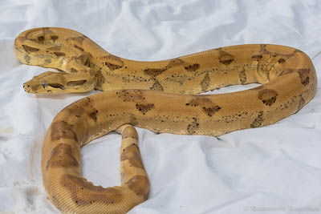
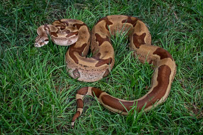
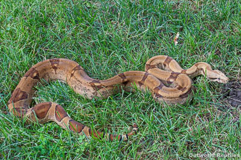
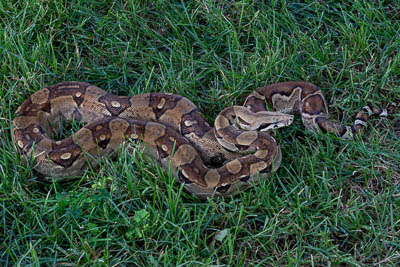
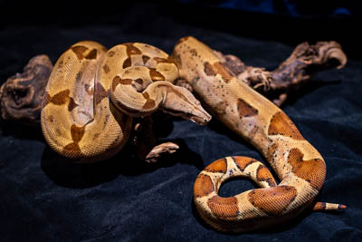

Boa Constrictor Imperator (BCI) Collection
If you're new to the world of boa constrictors you may not be aware that there are lots of different types of "boa constrictors". Typically what you see in a pet store or on television is referred to as a "boa", "boa constrictor", or "red-tailed boa". Chances are pretty good that in all cases the boa in question is a Boa Constrictor Imperator, commonly shortened to BCI in the reptile world. Without getting into too much detail, this species of boa constrictor is found throughout Central and South America and is the most common type of boa in the pet trade. There are a lot of other sub-species and locales of boas! True "red-tail boas" belong to the sub-species Boa Constrictor Constrictor (BCC) and generally have brick red-tails and get larger than BCI's. There is a fairly good breakdown of the boa species and sub-species here - Reptifiles - if you're interested in learning more.
{kind=link}
{kind=link}
Boo
{kind=link}
2013 Ghost Het-Albino Female, possible super. Produced by Mark Scott (Super Moonglow x Hypo 100% Het Moonglow (Orangasm Line)
Lasciel
{kind=link}
2013 Salmon Hypo Jungle Female, 50% het albino. Produced by Mark Scott DH Jungle x Hypo 100% Het Moonglow (Orangasm Line)
Nyssa al Ghul

2015 Junglesque Female. Produced by Morgans Boas (Dan Brown 2012 Arabesque (#1 litter pick) x Steve Scroggs 2011 Jungle (66% pos Parahet)
Calypso
{kind=link}
2014 Hypo het Anery (Mistico Line) Female. Produced by Boids Ohio (Mistico Hypo het Anery x Ivory Anery)
Artemis
{kind=link}
2014 Aby Hypo Female, possible super, 66% het anery. Produced by Morgans Boas (DH Aby Ghost x DH Aby Ghost)
Ferrovax
{kind=link}
2014 European Pastel Hypo Male. Produced by Celestial Exotics (European Hypo Pastel x Dayle Speckin Hypo)
Grimes

2013 Hypo Motley Het Albino Male (Lovell Line)
{kind=link}
Central American Boa Collection
Several years ago I saw my first blood boa morph and instantly fell in love. It look me a while but I eventually cultivated a very nice collection of Central American BCI's centered around the blood morph. Central American Boas are still Boa Constrictor Imperators, so they're they're technically the same species as the boas above. However, boas in Central America evolved different and are considered a "locale" type of boa. They're much smaller in size than BCI's from South America and they often have very different patterns. Examples of Central American Boas are Hogg Island Boas, El Salvador Boas (where the "blood morph originated"), and Costa Rica. There are others and each is considered to be it's own "locale", there are many breeders who specialize in breeding pure locale boas from each of these regions. My two Blood Boas are pure Central American Boas, the others in my collection have small amounts of South American BCI blood.
Buffy

2014 Blood Boa Female. Produced by Vin Russo.
Spike

2014 Blood Boa Female. Produced by Vin Russo.
{kind=link}
{kind=link}
{kind=link}
{kind=link}
Argentine Boa Collection
If I had more space I would absolutey have more sub-species of boas. Like I'd probably have all of them and all the locales. But space is limited and taking care of 20+ boas is already a lot of work for one person so I have to maintain some semblance of self control. Currently the only sub-species I own is a pair of Argentine Boas which are Boa Constrictor Occidentalis. Both of them were purchased from Ancient Reproductions who are super nice and wonderful breeders of Argentine Boas.
{kind=link}
{kind=link}
Miscellaneous
In addition to a variety of boa constrictors I also own quite a few other snakes that I don't breed but I like the species enough to have them in my collection.
{kind=link}
{kind=link}
{kind=link}
{kind=link}
{kind=link}